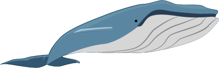
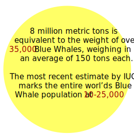
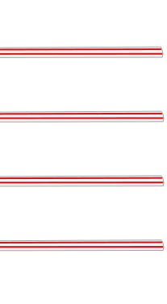
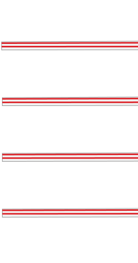
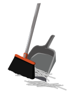

How Much plastic Really is in the Ocean?
8 million metric tons of plastic are thrown into the ocean
annually.
To the Scale of Blue Whales
Click Me!


The Truth About Straws


Canadians use about
57 million
plastic straws per day.
of all of these, only
11.4 million
actually get recycled.
The Life Cycle of Your Plastic Straw
What about the straws that do get recycled?
When you recycle your plastic straw, it gets sent to your local recycling plant.
Most of the time, due to their small size, plastic straws fall through the cracks and end up on the floor.

From there, they are swept up and thrown into the garbage to be sent to a landfill. And eventually end up in the ocean.
The Real Numbers
Although 57 Million per day sounds like a lot, plastic straws actually only account for 0.3% of all plastic in the ocean.
The More Prominent Culprits
Do More Than 0.3%:
click an image to learn more...
text...
some ending text
learn more about the issue